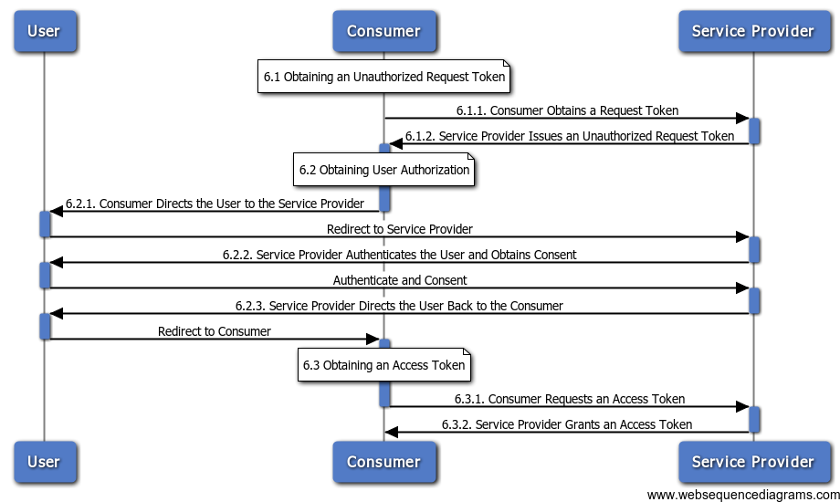

OAuth is a way to sign into to use a provider, like Facebook, SoundCloud, Spotify, etc. on behalf of a particular user and access data that they have access to. It has to be done this way because those services could never just give you access to their whole database. Instead you are gaining access to a portion of the data (whatever access that login can access).
Here's a diagram of what OAuth looks like in action:
As you can see it's pretty complicated. So to that end, we'll try and use libraries that do the OAuth for us. The Facebook SDK is an example of that.